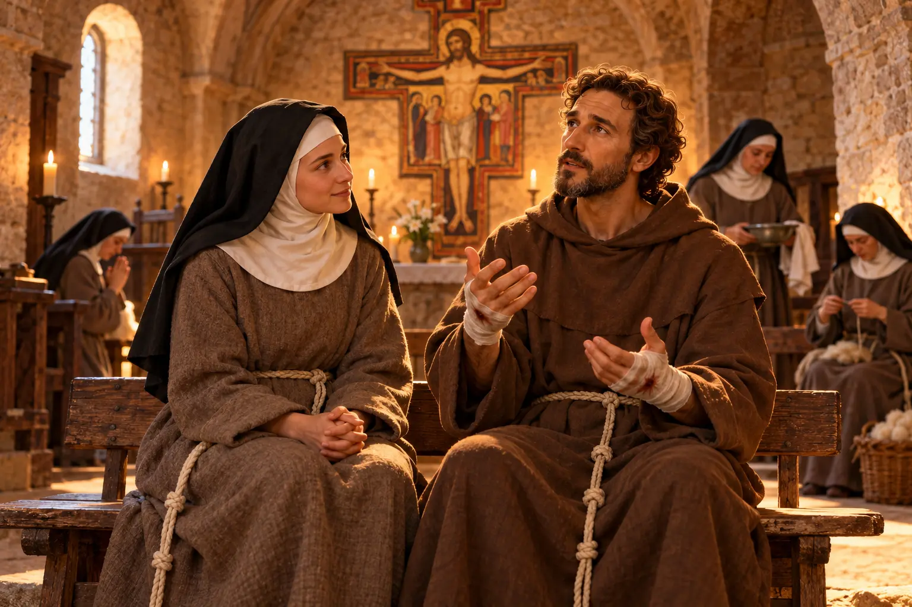

Santa Clara de Assis: a luz que seguiu Francisco
A jovem nobre que fugiu de casa numa noite de Domingo de Ramos para seguir São Francisco. Conheça a história da fundadora das Clarissas: a vida em São Damião, a amizade na fé com Francisco, a coragem diante dos soldados e o motivo de ela ser a padroeira da televisão.

Muita gente conhece São Francisco de Assis. Menos gente conhece a mulher que, ainda jovem, deixou tudo para seguir o mesmo caminho e se tornou uma das maiores santas da história da Igreja. Clara foi discípula, amiga e irmã na fé de Francisco. Mas foi também uma mulher de coragem própria, que enfrentou a família, os costumes da época e até papas para viver aquilo em que acreditava.
Ficha rápida
| Nome | Clara (Chiara) di Favarone di Offreduccio |
|---|---|
| Nascimento | Por volta de 1194, em Assis (Itália) |
| Morte | 11 de agosto de 1253, em São Damião, Assis (cerca de 59 anos) |
| Canonização | 1255, pelo Papa Alexandre IV |
| Festa | 11 de agosto |
| Padroeira | Da televisão (1958); popularmente, invocada para o bom tempo |
| Fundou | A Ordem das Irmãs Pobres, hoje Clarissas (1212), com São Francisco |
Uma menina nobre de Assis
Clara nasceu em Assis, na Itália, por volta de 1194, numa família rica e de tradição: os Offreduccio, de cavaleiros e nobres da cidade. A mãe, Ortolana, era uma mulher de muita fé, que chegou a fazer peregrinações à Terra Santa, coisa rara e perigosa naquele tempo. Conta a tradição que, grávida, Ortolana rezava preocupada com o parto quando ouviu no coração uma promessa: daria à luz uma luz que iluminaria o mundo. Por isso a menina recebeu o nome de Clara.
Desde pequena, Clara mostrava um jeito diferente. Rezava muito, guardava parte da própria comida para os pobres e vivia com simplicidade dentro de uma casa cheia de conforto. Como era costume entre as famílias nobres, os parentes já planejavam para ela um casamento vantajoso. Clara, porém, recusava todos os pretendentes.
O encontro com Francisco
Enquanto isso, Assis comentava sobre o filho do rico comerciante Pietro di Bernardone, que tinha renunciado à herança e vivia como pobre, reconstruindo igrejas e pregando o Evangelho. Clara, uns doze anos mais nova que Francisco, ouviu as pregações dele e reconheceu ali o que o seu próprio coração buscava.
Ela passou a se encontrar com Francisco às escondidas, sempre acompanhada de uma amiga de confiança, para conversar sobre Deus e sobre a vida de pobreza. Daquelas conversas nasceu uma decisão que mudaria a vida dela para sempre.
A noite da fuga: Domingo de Ramos de 1212
Na noite do Domingo de Ramos de 1212, com cerca de 18 anos, Clara saiu de casa em segredo. Para não ser vista, deixou a casa por uma porta pouco usada, a chamada “porta dos mortos”, que nas casas da época servia para retirar os corpos dos falecidos. Era um sinal forte: ela estava morrendo para a vida antiga.
Clara caminhou pela noite até a Porciúncula, a pequena igreja no vale onde Francisco e os frades viviam. Eles a esperavam com tochas acesas. Ali, diante do altar, Clara entregou sua vida a Deus. Francisco cortou os cabelos dela, um gesto de consagração, e ela trocou as roupas finas por um hábito simples de lã.
A família reagiu com fúria. Parentes foram buscá-la no mosteiro onde Francisco a deixou provisoriamente. Clara se agarrou ao altar e descobriu a cabeça, mostrando os cabelos cortados. A decisão estava tomada, e ninguém a faria voltar atrás.
São Damião e as “Damas Pobres”
Poucos dias depois, a irmã mais nova de Clara, Catarina, fugiu de casa para se juntar a ela. A família tentou de novo levá-la à força, e conta a tradição que o corpo da menina ficou tão pesado que os homens não conseguiram carregá-la. Francisco deu a Catarina o nome de Inês.
Francisco então levou as duas para São Damião, a igrejinha que ele mesmo havia reconstruído com as próprias mãos no começo da conversão. Foi ali que Clara viveu pelos 41 anos seguintes, sem nunca mais sair.
Outras moças foram chegando e, anos depois, chegaram também a mãe, Ortolana, e a irmã caçula, Beatriz. Nascia assim a ordem feminina franciscana, primeiro chamada de “Damas Pobres” e hoje conhecida como Clarissas. Por insistência de Francisco, Clara aceitou, contra a vontade dela, ser a abadessa. Ela entendia esse papel como serviço: lavava os pés das irmãs, cuidava das doentes e fazia os trabalhos mais humildes.
O “Privilégio da Pobreza”
Naquele tempo, todo mosteiro precisava ter terras e rendas para se sustentar. Clara recusava isso. Ela queria que as irmãs vivessem como Francisco: sem posses, confiando apenas na Providência e no trabalho das próprias mãos.
Para garantir esse direito, Clara pediu ao Papa algo inédito: o “Privilégio da Pobreza”, a permissão para não ter bens. Mais tarde, quando o Papa Gregório IX quis convencê-la a aceitar propriedades para a segurança do mosteiro, ela respondeu com firmeza que não queria ser dispensada de seguir Cristo. Clara passou a vida inteira defendendo essa escolha.
Uma amizade na fé
A amizade entre Clara e Francisco é uma das mais bonitas da história da Igreja, e também uma das mais mal compreendidas. Alguns filmes e livros tentaram transformá-la em romance. Não foi. Foi um amor de outra natureza: dois irmãos na fé que se apoiavam, se aconselhavam e cresciam em Deus, cada um no seu caminho.
Quando Francisco teve dúvidas se devia se dedicar só à oração ou continuar pregando pelas estradas, foi a Clara que ele pediu conselho. E quando, já doente e quase cego, precisou de cuidado, foi em São Damião que ficou. Ali, numa cabana ao lado do mosteiro, Francisco compôs o Cântico das Criaturas, o louvor ao “irmão Sol” e à “irmã Lua”.
Quando Francisco morreu, em 1226, o cortejo com o seu corpo passou por São Damião, para que Clara e as irmãs pudessem se despedir dele uma última vez.
A coragem diante dos soldados
Em 1240, tropas a serviço do imperador, que saqueavam a região, chegaram aos muros de São Damião. As irmãs, apavoradas, correram até Clara, que estava de cama, doente.
Clara pediu que a levassem até a porta e que trouxessem o Santíssimo Sacramento. Diante dos soldados, com a Eucaristia, ela rezou pedindo a proteção de Deus para as irmãs. Os invasores recuaram e foram embora. Por isso Santa Clara costuma ser retratada segurando um ostensório. A força dela não vinha das armas, mas da fé.
Padroeira da televisão
Clara passou quase 30 anos doente, grande parte deles sem conseguir se levantar da cama. Numa noite de Natal, perto do fim da vida, ela ficou sozinha no quarto, triste por não poder ir à Missa com as irmãs. Conta a tradição que, naquela noite, ela viu e ouviu a celebração na parede do quarto, como se estivesse lá.
Por causa desse episódio, em 1958 o Papa Pio XII proclamou Santa Clara padroeira da televisão. Uma santa do século XIII protegendo os meios de comunicação de hoje.
Os últimos dias
Clara escreveu a regra de vida das irmãs, a primeira regra escrita por uma mulher a ser aprovada pela Igreja. Ela esperou a vida inteira por essa aprovação. A confirmação do Papa Inocêncio IV chegou em agosto de 1253, quando ela já estava morrendo. Clara beijou o documento com alegria e, dois dias depois, em 11 de agosto de 1253, partiu.
Entre as últimas palavras atribuídas a ela está uma conversa com a própria alma:
“Vai em paz, porque tens boa companhia para o caminho.”
E, por fim, um agradecimento: “Bendito sejais, Senhor, que me criastes.”
Clara foi declarada santa apenas dois anos depois, em 1255. Seu corpo descansa hoje na Basílica de Santa Clara, em Assis, onde também está o crucifixo de São Damião, o mesmo diante do qual Francisco ouviu o chamado para reconstruir a Igreja. Sua festa é celebrada em 11 de agosto.
Linha do tempo
| Ano | Acontecimento |
|---|---|
| c. 1194 | Nasce em Assis, na família Offreduccio |
| 1212 | Foge de casa no Domingo de Ramos e se consagra na Porciúncula; vai para São Damião |
| c. 1215 | Torna-se abadessa de São Damião |
| 1225 | Francisco, doente, compõe o Cântico das Criaturas junto a São Damião |
| 1226 | Morte de São Francisco; o cortejo passa por São Damião |
| 1228 | O Papa Gregório IX confirma o Privilégio da Pobreza |
| 1240 | Enfrenta os soldados com o Santíssimo Sacramento |
| 1253 | Regra aprovada por Inocêncio IV; morre em 11 de agosto |
| 1255 | Canonizada pelo Papa Alexandre IV |
| 1958 | Pio XII a proclama padroeira da televisão |
Mitos e verdades
“Clara e Francisco eram apaixonados.”
Os dois teriam vivido um amor romântico que nunca se realizou.
Mito. As fontes da época mostram uma amizade espiritual profunda, de irmãos na fé. A ideia de romance nasceu em filmes e livros modernos.
“Clara era uma moça pobre.”
Como viveu na pobreza, Clara teria nascido pobre.
Mito. Ela era de família nobre e rica. A pobreza foi uma escolha, não uma condição de nascimento.
“Santa Clara é padroeira da televisão.”
A Igreja deu a Santa Clara o título de padroeira da televisão.
Verdade. O título foi dado pelo Papa Pio XII em 1958, lembrando a Missa de Natal que ela “assistiu” do quarto.
“Oferecer ovos a Santa Clara faz parar a chuva.”
Quem quer tempo bom para um casamento ou uma festa leva ovos às irmãs clarissas e pede a Santa Clara.
Tradição popular. O costume nasceu do próprio nome: Clara lembra claridade, céu claro. Não é um ensinamento da Igreja, mas uma devoção carinhosa do povo, que também ajuda as irmãs a se manterem.
“As clarissas ficaram no passado.”
A ordem fundada por Clara teria acabado há muito tempo.
Mito. As Clarissas existem até hoje em mosteiros do mundo inteiro, inclusive no Brasil, vivendo em oração e simplicidade.
Perguntas frequentes
Quando é o dia de Santa Clara?
11 de agosto, dia em que ela morreu, em 1253.
Santa Clara e São Francisco eram namorados?
Não. Eles tiveram uma profunda amizade espiritual, como irmãos na fé. A ideia de um romance entre os dois vem de filmes e livros, não da história.
Por que Santa Clara aparece segurando um ostensório?
Por causa do episódio de 1240, quando ela enfrentou os soldados que invadiam São Damião segurando o Santíssimo Sacramento e rezando. Os invasores recuaram.
Por que ela é padroeira da televisão?
Doente, numa noite de Natal, ela teria visto e ouvido a Missa na parede do próprio quarto. Por isso o Papa Pio XII a proclamou padroeira da televisão em 1958.
Onde está o corpo de Santa Clara?
Na Basílica de Santa Clara, em Assis, na Itália.
O que Clara ensina hoje
- Coragem para fazer escolhas. Clara tinha 18 anos, uma família poderosa contra ela e um futuro “garantido” pela frente. Escolheu o caminho que o coração pedia. Nunca é tarde para fazer as escolhas que dão sentido à vida.
- Força na fraqueza. Ela passou quase 30 anos doente e, mesmo assim, conduziu uma comunidade, enfrentou soldados e defendeu o que acreditava. A limitação do corpo não precisa limitar a alma.
- Fidelidade ao longo dos anos. Foram 41 anos no mesmo lugar, fiel à mesma escolha. Clara mostra que a santidade se constrói no dia a dia, na constância.
- Caminhar junto na fé. A amizade de Clara e Francisco mostra que duas pessoas que se apoiam em Deus se fortalecem mutuamente. Muitos casais e amigos que já caminham juntos há muitos anos conhecem bem isso: quem tem fé lado a lado divide o peso e multiplica a alegria.
- Simplicidade. Num mundo que mede as pessoas pelo que elas têm, Clara lembra que a verdadeira riqueza está no que se é e no que se doa.
Paz e bem!
Fontes principais
- Papa Bento XVI — Audiência Geral sobre Santa Clara de Assis, 15 de setembro de 2010 (vatican.va).
- Legenda de Santa Clara, atribuída a Tomás de Celano (Fontes Franciscanas e Clarianas).
- Processo de canonização de Santa Clara, 1253 (Fontes Franciscanas e Clarianas).
- Regra de Santa Clara, aprovada pela bula Solet annuere de Inocêncio IV, 9 de agosto de 1253.
- Pio XII — Carta apostólica que proclama Santa Clara padroeira da televisão, 1958.
- Ordem de Santa Clara — história e presença das Clarissas no mundo.